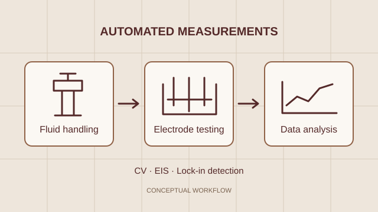
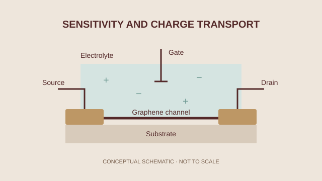
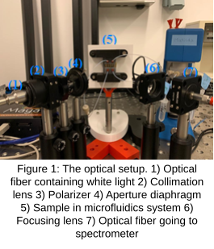
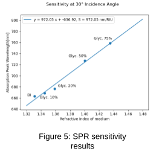
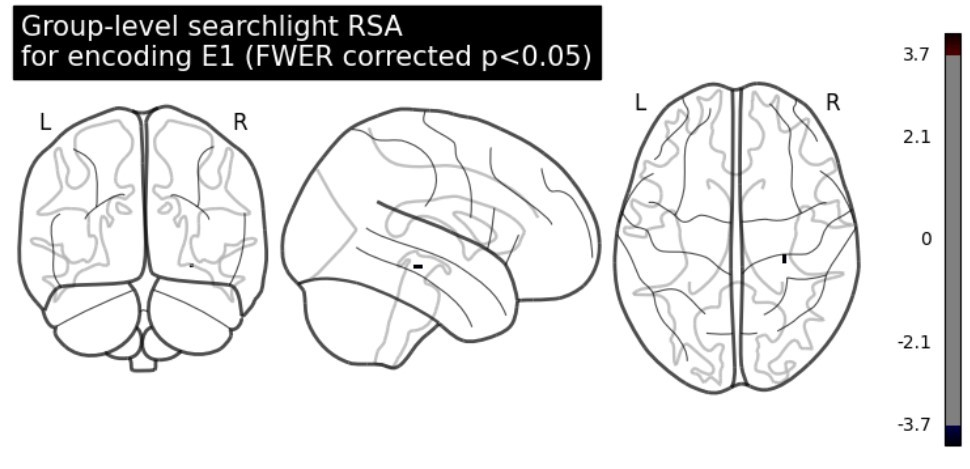
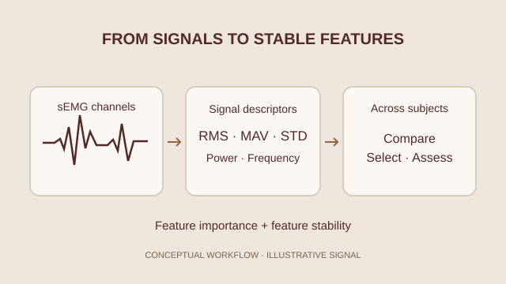

BiosensingElectrochemical sensing workflow
Mapped an electrochemical biosensing workflow from measurement setup through signal interpretation and reporting.
- Cyclic voltammetry
- EIS
- Test automation
Open to opportunities
Biomedical & Electrical Engineering Graduate
I explore biosensors, biomedical instrumentation, and scientific data analysis through academic projects and early engineering experience.
About me
I am a recent biomedical and electrical engineering graduate interested in the space between biological questions and measurable signals. Through academic projects and early engineering experience, I have worked with biosensors, biomedical instrumentation, experimental measurements, and scientific data analysis.
I enjoy learning across disciplines, building a careful understanding of a problem, and communicating what the data can—and cannot—support.
Selected work
A selection of academic and early engineering projects across biosensing, instrumentation, and biomedical data analysis.

BiosensingMapped an electrochemical biosensing workflow from measurement setup through signal interpretation and reporting.

BiosensingInvestigated graphene field-effect transistor response across pH conditions and compared measurement trends.

BiosensingContributed gold-coated sensing surfaces and nanoparticle functionalization to a team optical biosensor.

InstrumentationA closer look at the SenSwiss team’s glycerol calibration results and the optical sensor’s refractive-index response.

Data analysisApplied a searchlight-style analysis to explore patterns in neuroimaging data and interpret model outputs.

Data analysisHandled feature extraction, feature selection, comparison, and stability analysis for surface EMG signals.
No projects match this category.
Skills & tools
Methods and tools I have used through academic projects and early engineering experience.
Working with sensing interfaces.
Making measurements interpretable.
From data to careful interpretation.
Exploring patterns in biological signals.